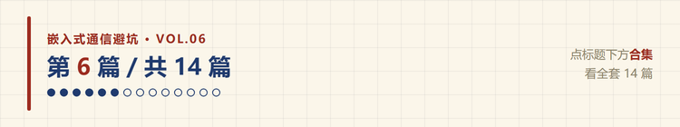
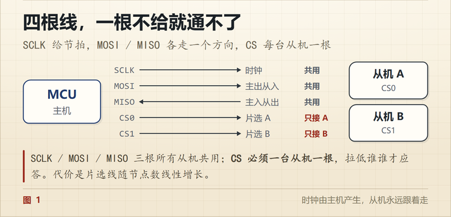
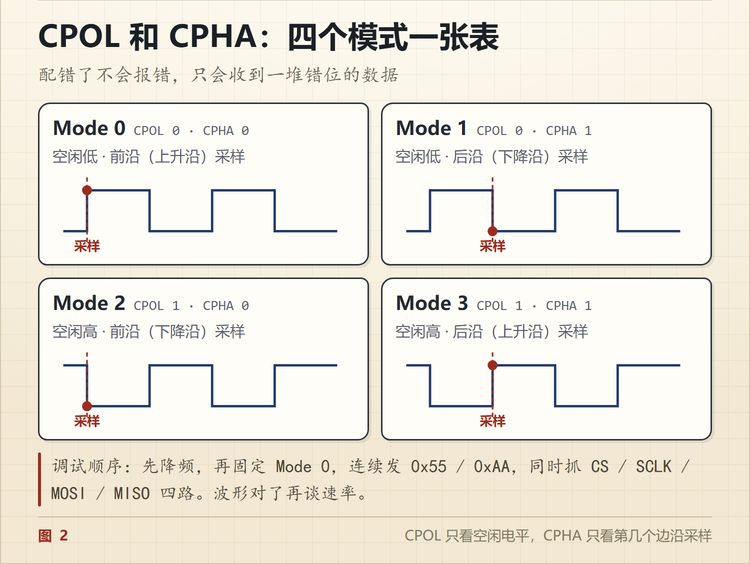

SPI 的 CPOL 和 CPHA 是什么？配错就只收到 0xFF
🐵 程序小猴 · 嵌入式通信避坑 Vol.06
四条线都在跳，CS 也正常，数据就是不对，八成是模式。

读 Flash 的 ID，读回来是 0xFF。
示波器四条线都夹了，CS 拉得干净，SCLK 也在跳，MOSI 上有数据。看上去一切都对。
最后发现是模式配错了。改成 Mode 0，一次就读出来了。
SPI 的坑，一半在 CPOL 和 CPHA 上。
一、先认清四根线
SPI 没有地址、没有起始位、没有应答，就四条线。
| 线 | 方向 | 干什么 |
|---|---|---|
| SCLK | 主机 → 从机 | 时钟，主机说了算 |
| MOSI | 主机 → 从机 | 主发从收（Master Out Slave In） |
| MISO | 从机 → 主机 | 从发主收（Master In Slave Out） |
| CS | 主机 → 从机 | 片选，低电平有效（多数器件） |
四条线，一个时钟，数据跟着时钟走。就这么简单。
也正因为简单，它没有统一的帧格式，也没有统一的时序约定，剩下的全靠两边事先说好。

二、CPOL 管什么
CPOL 决定时钟空闲时是高电平还是低电平。
- CPOL = 0，空闲是低电平
- CPOL = 1，空闲是高电平
就这么一件事，但它决定了「边沿从哪来」。
CPOL=0 的时候，时钟第一个跳变是上升沿；CPOL=1 的时候，第一个跳变是下降沿。
这个「第一个跳变」，后面叫前沿。
三、CPHA 管什么
CPHA 决定在第几个边沿采样。
- CPHA = 0，在第一个边沿（前沿）采样
- CPHA = 1，在第二个边沿（后沿）采样
两者配合起来才有完整含义。单独看任何一个都没有意义。
顺便说清楚数据在哪变化。
CPHA=0 时，数据在前沿之前就已经准备好了，前沿采样，后沿移位。
CPHA=1 时，数据在前沿变化，后沿采样。
四、四个模式，一张表
| 模式 | CPOL | CPHA | 空闲电平 | 采样边沿 |
|---|---|---|---|---|
| Mode 0 | 0 | 0 | 低 | 上升沿（前沿） |
| Mode 1 | 0 | 1 | 低 | 下降沿（后沿） |
| Mode 2 | 1 | 0 | 高 | 下降沿（前沿） |
| Mode 3 | 1 | 1 | 高 | 上升沿（后沿） |
记的时候抓住两句就够。
CPOL 只看空闲电平是高还是低。
CPHA 只看是第几个边沿采样。
Mode 0 和 Mode 3 是实际用得最多的两个。多数 Flash、传感器、显示屏都是 Mode 0，少数用 Mode 3。Mode 1 和 Mode 2 少见，但不是没有。

五、怎么确定该用哪个
不要猜，翻手册。
器件手册里一般会写一句「Data is sampled on the rising edge of SCLK」或者给一张时序图。对照上面那张表，就能反推出 CPOL 和 CPHA。
手册只给波形不给模式号的情况很常见，这时候看两点。
空闲时 SCLK 是高还是低，这是 CPOL。
采样点画在第一个边沿还是第二个边沿，这是 CPHA。
还有一种情况，器件支持多个模式。那就随便挑一个用得最熟的，比如 Mode 0，把主机配成对应模式就行。
六、配错了会怎样
两种典型现象。
第一种，读回来全是 0xFF 或者全 0x00。
MISO 上根本没有有效数据，读到的是总线空闲电平。上拉就是 FF，下拉就是 00。
第二种，数据看着像但整体错位。
比如你想读 0x5A，读回来是 0xB4，正好是右移一位。这是采样点偏了一个边沿，数据整体错位了一拍。
第二种比第一种难查，因为数据不是全错，你会怀疑是协议理解错了、地址算错了，反而容易忽略模式。
七、调试顺序
按这个顺序走，能省掉大量时间。
第一步，把频率降到最低。 先降到 100kHz 或者 1MHz。高速下的问题会掩盖低速下的问题。
第二步，固定 Mode 0，连续发 0x55。 0x55 是 01010101，波形最规整，肉眼一眼就能看出采样点对不对。
如果 0x55 出来是 0xAA，就是错了一位，直接去调 CPHA。
第三步，抓四路波形。 CS、SCLK、MOSI、MISO 一起抓，别只抓一两根。四个信号的相对关系才是重点。
第四步，确认 CS 覆盖整笔事务。 有些器件要求 CS 一直拉低到整条命令结束，中间不能抬起来。CS 抬早了，后半段数据就丢了。
第五步，确认位序。 SPI 通常高位先出（MSB first），但有些器件是低位先出。这个也在手册里。
第六步，确认命令和地址。 每条命令后面跟几个字节、地址是几位、要不要插入 dummy 字节，全看手册。SPI 没有统一的读命令，各家不一样。
八、读寄存器为什么要多发一个字节
这是 SPI 新手最常问的问题。
因为 SPI 是全双工，主机不发时钟，从机就没法吐数据。
你想读一个字节，主机必须先发一个字节（内容无所谓），才能产生 8 个时钟，从机才有机会把数据放到 MISO 上。
所以「发命令 → 发地址 → 再发一个空的 → 这时候收到的才是数据」这个流程是正常的，不是代码写错了。
具体在第几个字节收到有效数据，看器件的时序图。有的器件命令和地址合并成一个字节，有的要发两三个 dummy 字节。
九、频率拉高之后
1MHz 到 20MHz，通常改个分频就行。
20MHz 往上，问题性质就变了。走线长度、负载电容、串联电阻、时钟振铃、建立保持时间，全都冒出来。
这时候逻辑分析仪不够用了，得用示波器看实际波形。逻辑分析仪告诉你协议对不对，示波器告诉你电平干不干净。
高速 SPI 到最后，问题就变成信号完整性了，不再是协议本身。
十、按这个顺序查

| 顺序 | 查什么 | 怎么查 | 典型现象 |
|---|---|---|---|
| ① | 模式对不对 | 手册时序图对照四个模式 | 全 FF、全 00 |
| ② | 位序对不对 | 手册查 MSB/LSB first | 数据整体反向 |
| ③ | 采样点偏没偏 | 发 0x55 看回来的是不是 0xAA | 整体移位一位 |
| ④ | CS 覆盖范围 | 抓 CS 与最后一拍的关系 | 后半段丢数据 |
| ⑤ | dummy 字节 | 对照手册的命令序列 | 数据错位一个字节 |
| ⑥ | 频率太高 | 降频重试 | 低频正常高频出错 |
| ⑦ | 电平与走线 | 示波器看摆幅和振铃 | 高速下误码 |
第 ③ 步最灵。0x55 和 0xAA 互为镜像，一眼就能看出是不是采样点偏了。

SPI 本身不难，四条线而已。
难的是它把「时序约定」这件事完全交给了器件手册，而手册里那张时序图，很多人是跳着看的。
你被哪个器件的 SPI 时序坑过？评论区说说型号。
📌 这是「嵌入式通信避坑」第 6 篇，全系列 14 篇，从串口一路讲到 CAN 和无线选型。
💬 觉得有用就点个在看，下一篇进工业现场，讲 CAN 一帧从 SOF 到 EOF，每个字段在管什么。